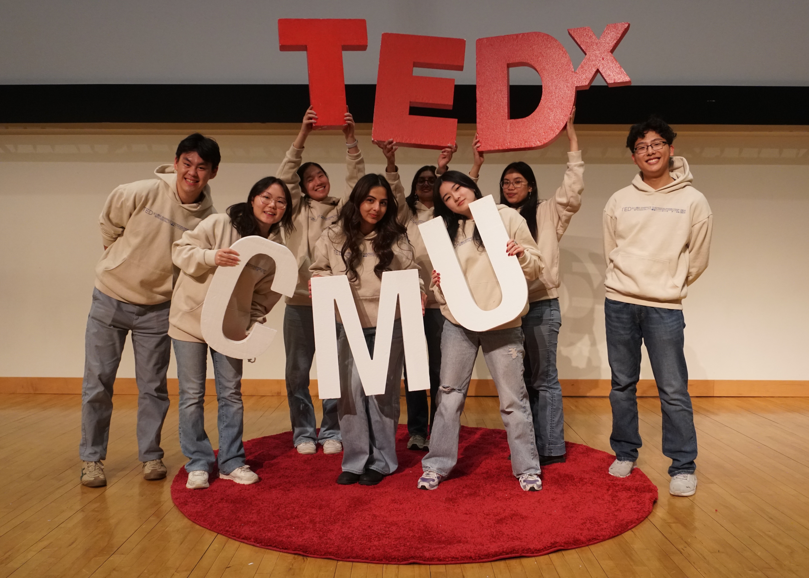

TEDxCMU
Speaker Curation Team (2023-24), Head of Speaker Curation (2024-25), Co-President (2025+)
In TEDxCMU, we host an annual main event where we invite speakers from all around the world to speak on a topic they are passionate about. As co-president, I oversee the 6 teams that comprise our organization (speaker curation, logistics, public relations, innovation, design, salon) and work with the speakers that are coming to our campus.
In the past, I have worked with a social media influencer disability advocate, a CMU professor, and a student speaker in structuring their ideas into talks and getting them ready to perform on stage. It truly is a rewarding process to be able to work with candidates, as some of them come in with one potential idea, and we help to flesh it out.
Events hosted
- March 2024: Ignite
- March 2025: Parallax
- March 2026: Eunoia
- April 2027: Poiesis